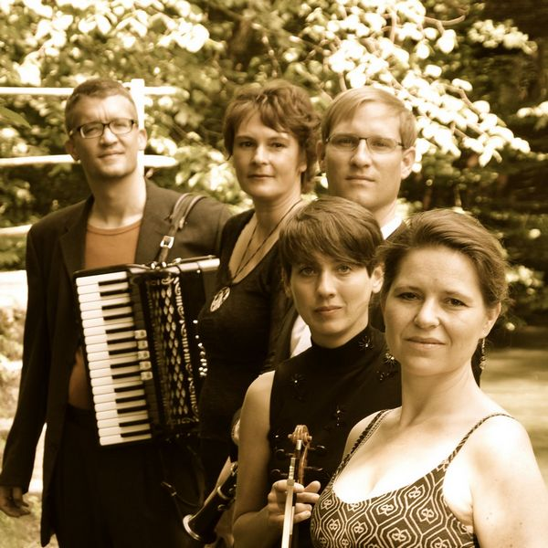
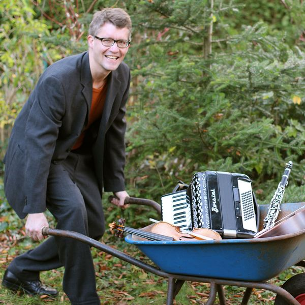

More Info
-

You find more photos of us in our Gallery.
-

Planning an event or just interessted? Get in touch and find out more about us.
-

Our contact card for printing, forwarding and distribution.
Ensemble
Lena Bittl (vocals)
Corinna Schröder (violin, vocals)
Hubert Stärk (clarinet)
Annette Schmidt (guitar, vocals)
Heiko Schaaf (contrabass)
Bernhard Bittl (accordion, vocals, percussion, arrangements)